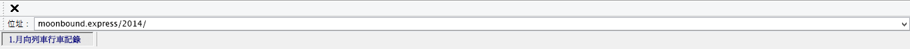

《桂花釀》這首歌總讓我聯想到一些朦朧泛黃、霧氣氤氳的場景，上世紀末溫柔憂愁的女人與內斂穩重的男人，夕陽斜照，房間裏金色的猶如撒了一地落花，大概是桂花。不知為何，雖然沒有看過《金粉世家》，卻能將這首歌與這部電視劇聯想到一起，或許因為白秀珠那張很古典的臉。總對這首歌的前奏著迷，我不懂音樂，不知道那吹奏的是簫、笛還是別的什麽，好像深秋老宅裏的一首碧海潮生曲，哀愁是海浪，眼淚是雨。
以這首歌為靈感，我寫過一篇科幻小說，也叫做《桂花釀》。我想，若老宅裏住著的是世界末日後的地球新生物會如何？又想，世界末日之後，地球重新孕育出與我們長相不同的生命，仍然會追求浪漫嗎？會看書、彈琴、釀桂花嗎？在我身上有很矛盾的部分，我的天馬行空永遠被少年時代愛上傳統的芭樂情愛所擁抱，像一張溫暖的膜。我可以化作外星人、機械、精靈，任何一種可知或不可知的生物，但我仍要回到起點，以最守舊的方式為愛人釀一碗桂花。

以這首歌為靈感，我寫過一篇科幻小說，也叫做《桂花釀》。我想，若老宅裏住著的是世界末日後的地球新生物會如何？又想，世界末日之後，地球重新孕育出與我們長相不同的生命，仍然會追求浪漫嗎？會看書、彈琴、釀桂花嗎？在我身上有很矛盾的部分，我的天馬行空永遠被少年時代愛上傳統的芭樂情愛所擁抱，像一張溫暖的膜。我可以化作外星人、機械、精靈，任何一種可知或不可知的生物，但我仍要回到起點，以最守舊的方式為愛人釀一碗桂花。